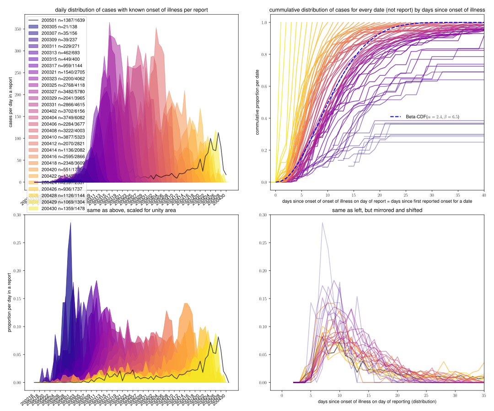

Nachdem weitreichende Maßnahmen im März 2020 eine Eindämmung der Verbreitung von COVID-19 erreicht haben (R ≈ 1), steht die Frage im Raum, wie es weitergehen kann. Unschschiedliche Maßnahmen führen zu spezifischen Anzahlen an Folgefällen. Die Anzahl der Folgefälle steht in direktem Verhältnis zur Verdoppelungszeit. Für einen Betrachtungszeitraum mit konstantem R > 1 wächst die Zahl der Fälle exponentiell, ebenso wie die Zahl der täglichen Neuinfektionen. Die Eigenschaften exponentieller Prozesse sind oft nicht intuitiv, insbesondere nachdem das Wachstum (der Neuinfektionen) zwischenzeitlich zum Erliegen gekommen ist und der Wechsel ins exponentielle Regime bevorsteht.
Die Bewertung eines Zeitraumes wird erschwert, da durch Inkubationszeit, Zeit bis zur Diagnose und Meldeverzögerung, erst nach 2-3 Wochen belastbare Daten vorliegen. Ein besseres Verständnis der verzögernden Prozesse erlaubt eine frühere Bewertung der Lage.
Anhand eines einfachen Modells sollen Varianten der Auflockerung der Maßnahmen vorgestellt werden und deren Bewertbarkeit geprüft und veranschaulicht werden.
Für die Modellierung der Verbreitung von COVID-19 ist der Zeitpunkt des Krankheitsbeginns (date of onset of illness) relevant, da damit die infektiöse Phase datiert werden kann. Mit dem Ende der Inkubationszeit kann bei einem Patienten mit Symptomen davon ausgegangen werden, dass dieser Andere anstecken kann. Auf bestehende Untersuchungen wird später verwiesen. Seit dem 04.03.2020 veröffentlicht das Rober Koch Institut (RKI) täglich einen Lagebericht für Deutschland zu COVID-19RKIdaily. Im Lagebericht enthalten ist eine Übersichtsgrafik der bekannten Fälle, die nach Datum des Krankheitsbeginns aufgetragen werden (Abb. 3 auf Seite 3/4). Eine entsprechende Analyse ist am 09.04.2020 vom RKI veröffentlicht wordenRKI409.
In den öffentliche zugänglichen Datensätzenm wie den Datenbanken der arcgis-Dashboards der Johns Hopkins University (JHU)JHUdash oder des RKIRKIdash, sind umfangreiche Daten zu den Fallzahlen hinterlegt, am Beispiel der RKI-Daten beispielsweise Bundesland, Kries, Geschlecht, Altersgruppe, neue Fälle und das Meldeatum. Nicht hinterlegt ist der Beginn der Krankheit. Der Krankheitsbeginn ist, wenn vorhanden, Teil der ans RKI übermittelten Meldedaten. In der oben erwähnten Analyse des RKIRKI409 wird ausgehend vom Krankheitsbeginn modelliert.
Die täglich veröffentlichten Grafiken aus den Lageberichten wurden per Hand digitalisiert und dienen als Basis der folgenden Analyse. Die Auflösung in den .pdfs reicht für ±10 Zähler an jedem Tag aus. Ist der Zeitpunkt des Krankheitsbeginns nicht bekannt oder ist der Fall asymptomatisch verlaufen, wird vom RKI das Meldedatum verwendet. Die Grafik in den Lageberichten weist diese Fälle gesondert aus.
Abbildung 1 stellt die Daten aller bisherigen Lagebreichte zusammen. Die Datenlage lässt sich für jedes Datum mit Situationsbericht auswählen. Der verwendete Datensatz ist als .json verfügbar: data.json
Stand 10.04.2020 ist im Lagebericht vom 19.03.2020 fälschlicherweise die Abbildung des Vortags enthalten (de/en). Für den 19.03.2020 kommen daher keine neuen Fälle hinzu, der 20.03.2020 verzeichnet einen überhöhten Anstieg.
Die in der Analyse des RKI vom 09.04.2020RKI409 präsentierten Fallzahlen nach Krankheitsbeginn weichen von den Balkendiagrammen der täglichen Lageberichte leicht ab. Eine tiefergehende Analyse steht aus.
Abb. 1:Bewege Auswahlslider um den Lagebericht auszuwählen. Die Legende zeigt die jeweils dargestellte Gesamtanzahl an Fällen in Klammern. Als durchgezogene Linie sind die Fallzahlen aus dem aktuellsten Lagebericht eingezeichnet. new unknown Fälle, die an der Spitze der Balken angezeigt werden entsprechen einer Verringerung gegenüber dem Vortag. / Move slider to pick date of reporting.
Das CDC veröffentlicht für die USA regelmäßig neue Zahlen für cases by date of onset of illnessCDCooi.Verglichen mit den RKI-Berichten, werden die Zahlen zusammen mit der Grafik veröffentlicht, Daten vergangener Lageberichte stehen beim CDC nicht direkt zur Verfügung.
Durch Vergleich der RKI Daten einzelner Lageberichte für Deutschland lassen sich Ausagen treffen, wann ein Krankheitsbeginn als neue Meldung in einem Lagebericht auftaucht.Mit Hilfe dieser Informationen lässt sicht abschätzen, wie groß der Anteil bereits erfasster Krankheitsfälle für einen Zeitpunkt ist. Je länger der Zeitpunkt des Krankheitsbeginns zurückliegt, desto mehr Fälle die an diesem Tage begonnen sind in nachfolgenden Lageberichten erfasst.
Erwartungsgemäß vergehen zwischen dem Beginn der Krankheit, der Laborbestätigung und Meldung eines Falls in einem Lagebericht mehrere Tage. Die folgende Grafik versucht einen Überblick über diesen Meldeverzug zu geben.
Abb. 2:Verteilung der in einem Tagesbericht enthaltenen Fälle nach Meldedatum. Unten links: Anteil der Fälle an einem Datum. Unten rechts: Anteil der Fälle nach zeitlichem Abstand zum Krankheitsbeginn. Oben rechts: Entwicklung der bekannten Krankheitsbeginne für jeden Tag.
Aus der oberen rechten Grafik lässt sich abschätzen, dass 5 Tage nach Krankheitsbeginn 10% der Fälle des Tages bekannt sind. Nach 10 Tagen sind 50% der Fälle erfasst, nach 20 Tagen 90% und nach 30 Tagen >95%. Für die frühen Fälle (zum Blauen hin) ist die Abschätzung schlecht, die Fallzahlen sind dort verglichen mit den anderen Kurven klein. Die neusten Fälle, deren Krankheitsbeginn weniger als 30 Tage zurückligt (gelb und hell-orange) sind nicht Grundlage des Fits (blau gestrichelt). Eine saubere Untersuchung nach festgelegten Kriterien steht aus (Mindestanzahl an Fällen, ausreichend abgeflacht), die genannten Zahlen können als Richtwerte dienen.
Unten links ist erkennbar, dass die neueren Lageberichte Anteilig mehr Fälle enthaltne, bei denen der Krankheitsbeginn erst um die 5 Tage zurückligt.
RKIdaily: Tägliche Lageberichte des RKI für Deutschland zu COVID-19, Situationsberichte/Archiv (Stand: 09.04.2020)
RKI409: an der Heiden M, Hamouda O: Schätzung der aktuellen Entwicklung der SARS-CoV-2-Epidemie in Deutschland – Nowcasting. Epid Bull 2020;17:10 – 15 | DOI 10.25646/6692 (Stand: 09.04.2020)
JHUdash: JHU Dashboard (Stand: 10.04.2020)
RKIdash: RKI Dashboard (Stand: 10.04.2020)
CDCooi: CDC Lagebericht (Stand: 10.04.2020)
Ich arbeite an diesem Projekt in meiner Freizeit, um mir (und anderen) ein besseres Bild der Lage zu Verschaffen. Expoenentilles Wachstum beschäftigt mich schon seit Jahren. Fell free to donate to bc1qhp4s53j0s9z7lhvwfangwf36epzqq0nz4zru4y to support my work if You learned something here.
Kontakt: matthias.linden@gmx.com oder matthiaslinden via Twitter